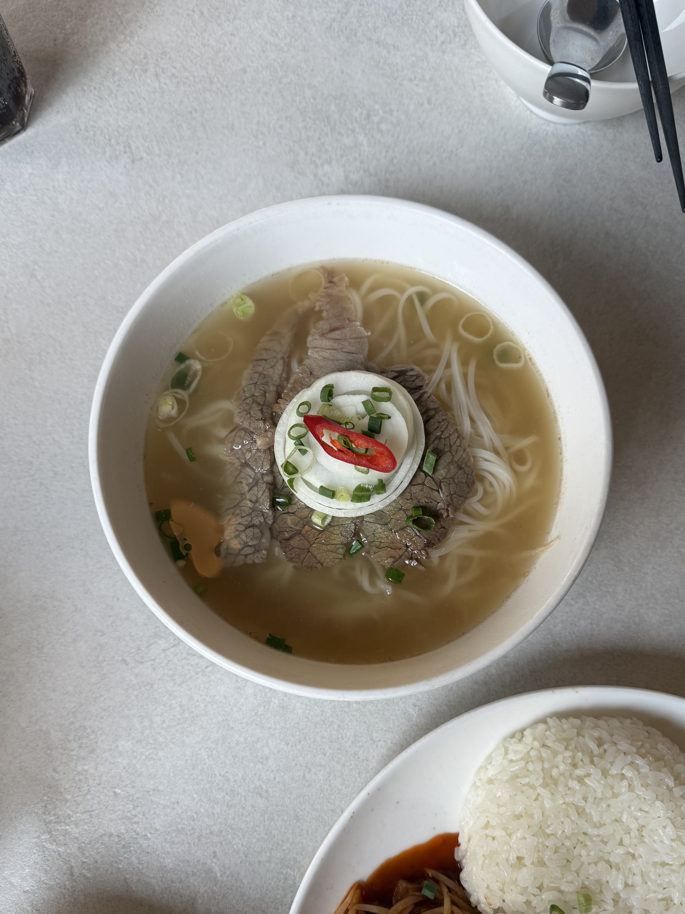
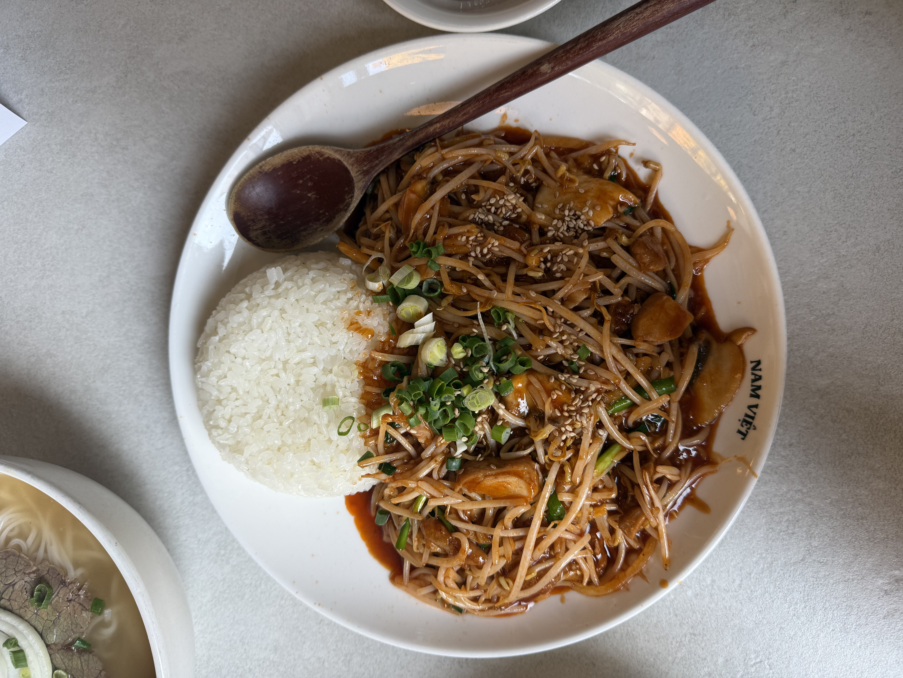

진한 사골 육수와 푸짐한 양으로 공강 시간이나 점심에 든든하게 먹기 좋은 한양대 앞 베트남 음식 맛집입니다.
1. 한우한돈사골국물 소고기 쌀국수 (퍼보)

가격: 10,500원
메뉴 설명: 10시간 이상 진하게 우려낸 한우·한돈 사골 육수의 깊은 감칠맛이 일품인 대표 메뉴입니다. 면과 고기 양이 넉넉해 한 그릇만 먹어도 배부르고 든든하게 채울 수 있습니다.
2. 껌사오 닭고기 매운맛

가격: 11,500원
메뉴 설명: 신선한 숙주와 아삭한 야채, 부드러운 닭고기에 진한 불맛을 입혀 볶아낸 베트남식 볶음덮밥입니다. 밥과 토핑이 접시 가득 수북하게 담겨 나올 정도로 양이 매우 푸짐해, 매콤하고 든든한 한 끼 식사로 강력 추천합니다. 특히 쌀국수와 함께 시켜 먹기 딱 좋습니다.